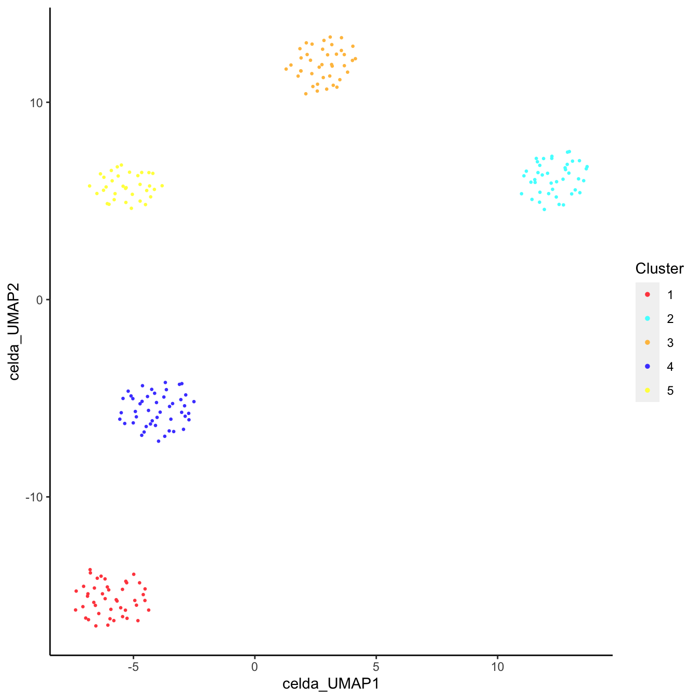
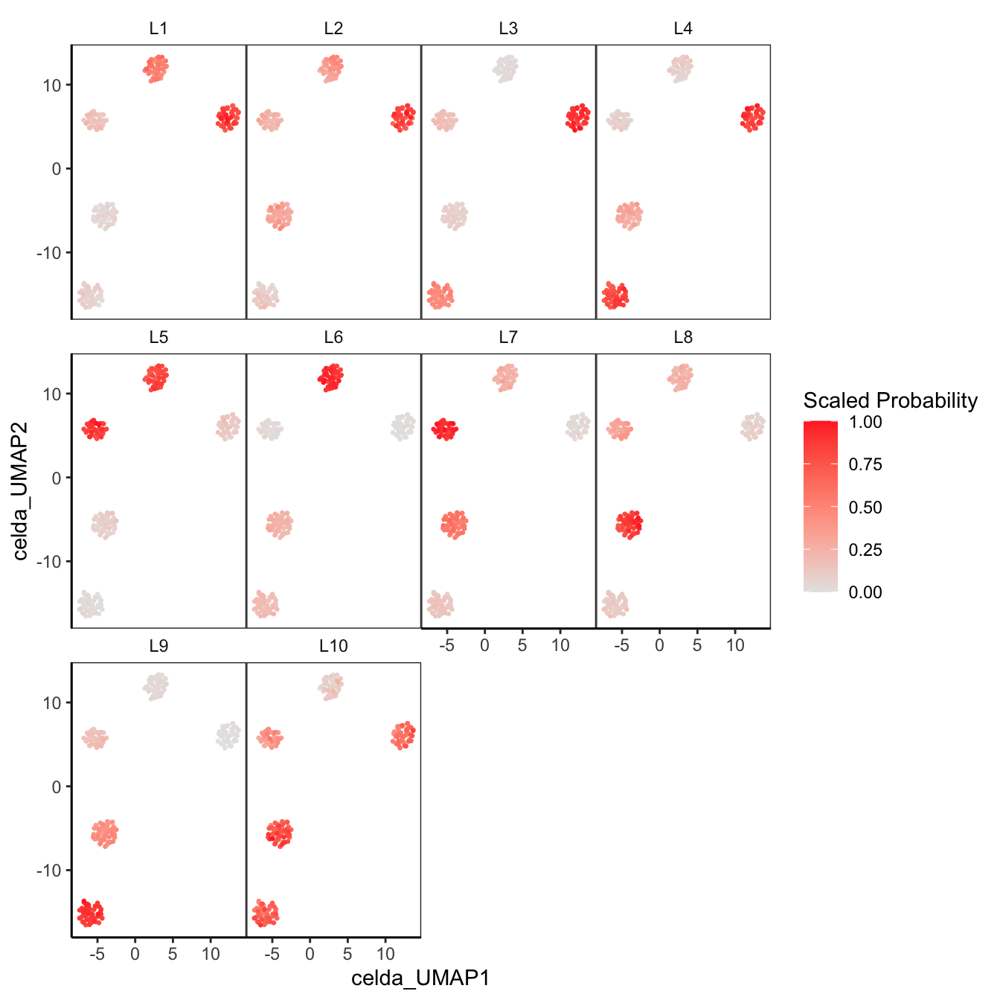
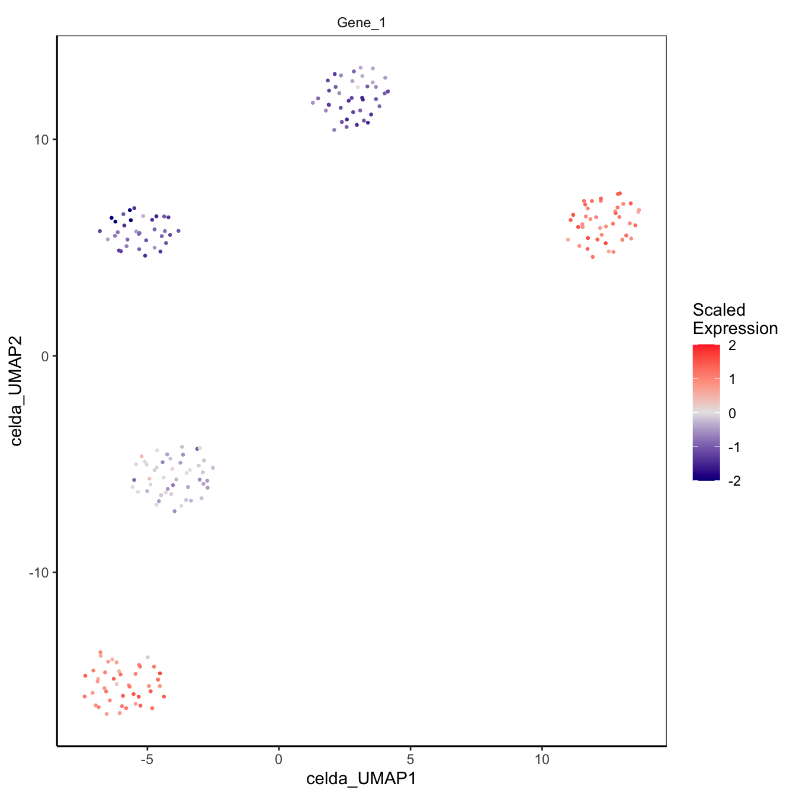
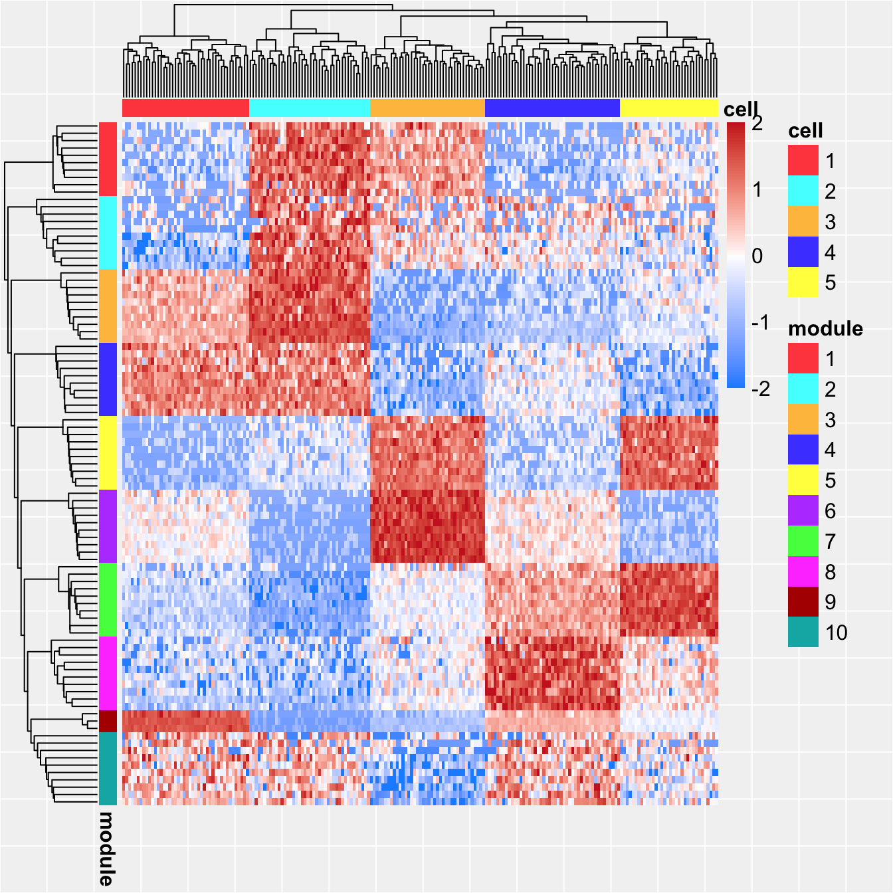
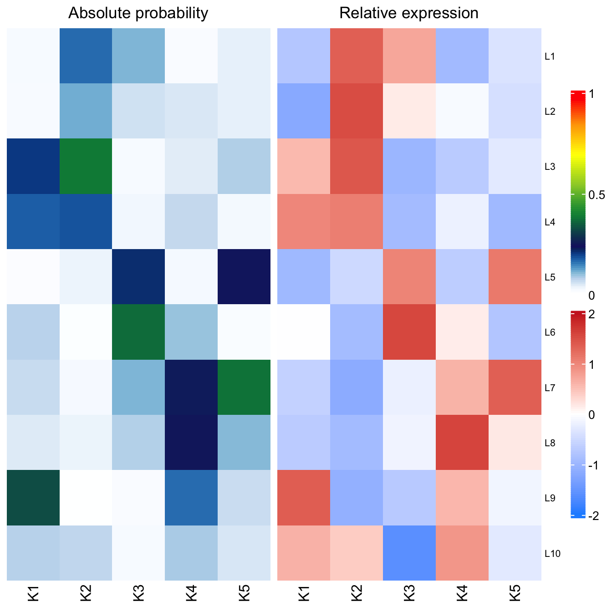
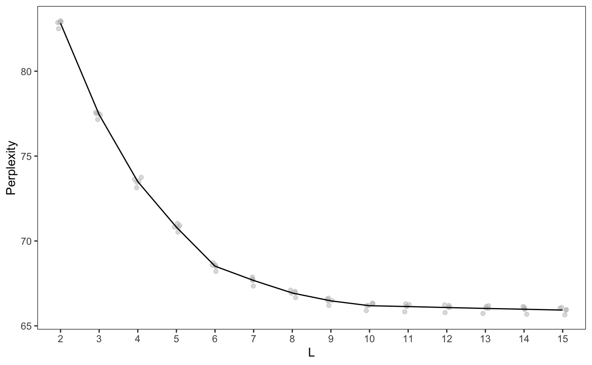
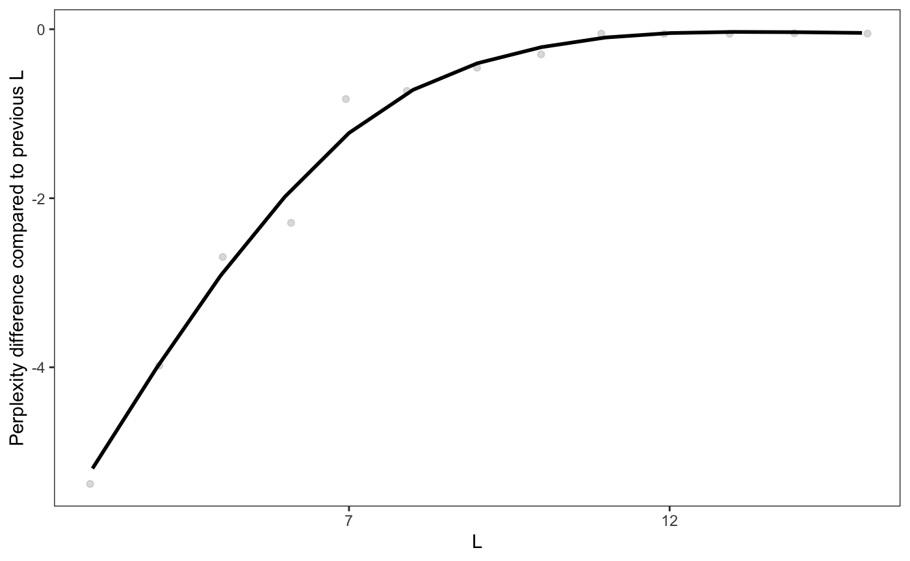
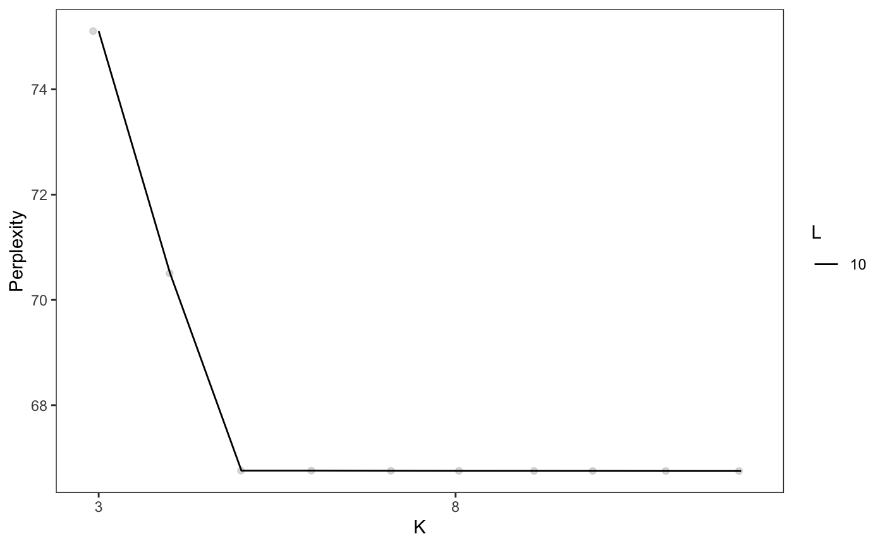
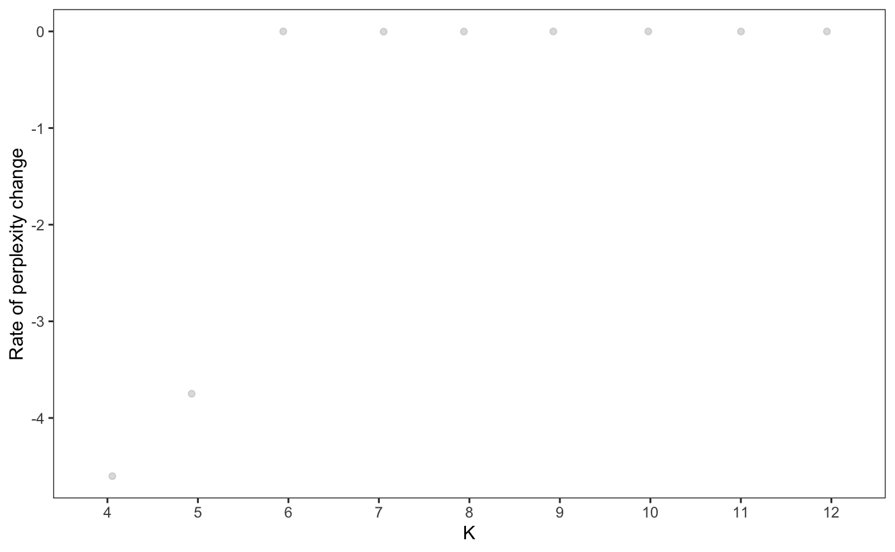
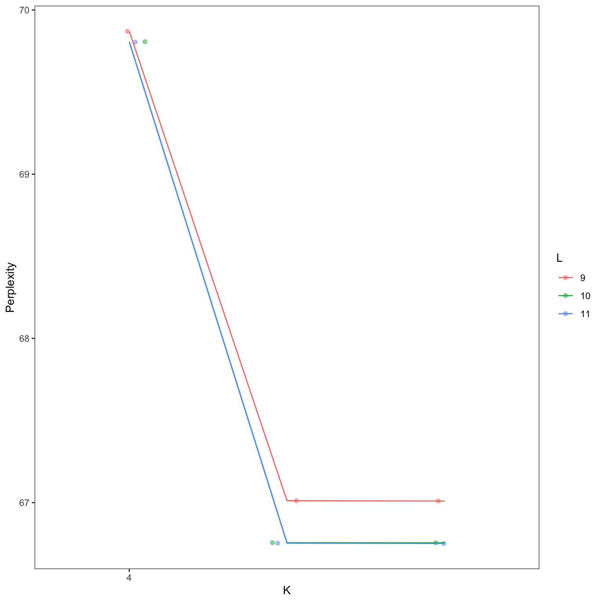

Analysis of single-cell genomic data with celda
Joshua Campbell
Boston University School of Medicinecamp@bu.edu
Zhe Wang
Boston University School of MedicineShiyi Yang
Boston University School of MedicineSean Corbett
Boston University School of MedicineYusuke Koga
Boston University School of Medicine2021-12-28
Source:vignettes/celda.Rmd
celda.RmdIntroduction
CEllular Latent Dirichlet Allocation (celda) is a collection of Bayesian hierarchical models to perform feature and cell bi-clustering for count data generated by single-cell platforms. This algorithm is an extension of the Latent Dirichlet Allocation (LDA) topic modeling framework that has been popular in text mining applications and has shown good performance with sparse data. celda simultaneously clusters features (i.e. gene expression) into modules based on co-expression patterns across cells and cells into subpopulations based on the probabilities of the feature modules within each cell.
Starting from Bioconductor release 3.12 (celda version 1.6.0), celda makes use of SingleCellExperiment (SCE) objects for storing data and results. In this vignette we will demonstrate how to use celda to perform cell and feature clustering with a simple, small simulated dataset. This vignette does not include upstream importing of data, quality control, or filtering. To see a more complete analysis of larger real-world datasets, visit camplab.net/celda for additional vignettes.
Installation
celda can be installed from Bioconductor:
if (!requireNamespace("BiocManager", quietly = TRUE)) {
install.packages("BiocManager")
}
BiocManager::install("celda")To load the package, type the following:
library(celda)A complete list of help files are accessible using the help command with the package option.
help(package = celda)To see the latest updates and releases or to post a bug, see our GitHub page at https://github.com/campbio/celda. To ask questions about running celda, post a thread on Bioconductor support site at https://support.bioconductor.org/.
Generation of a simulated single cell dataset
celda will take a matrix of counts where each row is a feature, each column is a cell, and each entry in the matrix is the number of counts of each feature in each cell. To illustrate the utility of celda, we will apply it to a simulated dataset.
In the function simulateCells, the K parameter designates the number of cell clusters, the L parameter determines the number of feature modules, the S parameter determines the number of samples in the simulated dataset, the G parameter determines the number of features to be simulated, and CRange specifies the lower and upper bounds of the number of cells to be generated in each sample.
To simulate a dataset of 5 samples with 5 cell populations, 10 feature modules, 200 features, and between 30 to 50 cells per sample using celda_CG model:
simsce <- simulateCells("celda_CG",
S = 5, K = 5, L = 10, G = 200, CRange = c(30, 50))The counts assay slot in simsce contains the counts matrix. The dimensions of counts matrix:
## [1] 200 207Columns celda_sample_label and celda_cell_cluster in colData(simsce) contain sample labels and celda cell population cluster labels. Here are the numbers of cells in each subpopulation and in each sample:
table(colData(simsce)$celda_cell_cluster)##
## 1 2 3 4 5
## 42 44 40 47 34
table(colData(simsce)$celda_sample_label)##
## Sample_1 Sample_2 Sample_3 Sample_4 Sample_5
## 43 48 45 40 31Column celda_feature_module in rowData(simsce) contains feature module labels. Here is the number of features in each feature module:
table(rowData(simsce)$celda_feature_module)##
## 1 2 3 4 5 6 7 8 9 10
## 23 39 17 15 21 22 19 12 4 28Feature selection
A simple heuristic feature selection is performed to reduce the size of features used for clustering. To speed up the process, only features with at least 3 counts in at least 3 cells are included in downstream clustering for this data. A subset SingleCellExperiment object with filtered features is stored in altExp(simsce, "featureSubset") slot by default.
simsce <- selectFeatures(simsce)If the number of features is still too large, then a smaller subset of features can be obtained by selecting the top number of most variable genes. For an example code, see the PBMC3K tutorial in the online celda documentation.
Performing bi-clustering with celda
There are currently three models within celda package: celda_C will cluster cells, celda_G will cluster features, and celda_CG will simultaneously cluster cells and features. Within the functions the K parameter will be the number of cell populations to be estimated, while the L parameter will be the number of feature modules to be estimated in the output model.
sce <- celda_CG(x = simsce, K = 5, L = 10, verbose = FALSE, nchains = 1)Here is a comparison between the true cluster labels and the estimated cluster labels.
table(celdaClusters(sce), celdaClusters(simsce))##
## 1 2 3 4 5
## 1 0 44 0 0 0
## 2 42 0 0 0 0
## 3 0 0 40 0 0
## 4 0 0 0 47 0
## 5 0 0 0 0 34
table(celdaModules(sce), celdaModules(simsce))##
## 1 2 3 4 5 6 7 8 9 10
## 1 0 32 0 0 0 0 0 0 0 0
## 2 19 0 0 0 0 0 0 0 0 0
## 3 0 0 15 0 0 0 0 0 0 0
## 4 0 0 0 13 0 0 0 0 0 0
## 5 0 0 0 0 21 0 0 0 0 0
## 6 0 0 0 0 0 19 0 0 0 0
## 7 0 0 0 0 0 0 0 12 0 0
## 8 0 0 0 0 0 0 17 0 0 0
## 9 0 0 0 0 0 0 0 0 3 0
## 10 0 0 0 0 0 0 0 0 0 20Visualization
Plotting cell populations on 2D-embeddings
celda contains its own wrapper function for tSNE and UMAP called celdaTsne and celdaUmap, respectively. Both of these functions can be used to embed cells into 2-dimensions. The output can be used in the downstream plotting functions plotDimReduceCluster, plotDimReduceModule, and plotDimReduceFeature to show cell population clusters, module probabilities, and expression of individual features, respectively.
sce <- celdaUmap(sce)
plotDimReduceCluster(x = sce, reducedDimName = "celda_UMAP")
plotDimReduceModule(x = sce, reducedDimName = "celda_UMAP", rescale = TRUE)
plotDimReduceFeature(x = sce, reducedDimName = "celda_UMAP",
normalize = TRUE, features = "Gene_1")
Creating an expression heatmap
The clustering results can be viewed with a heatmap of the normalized counts using the function celdaHeatmap. The top nfeatures in each module will be selected according to the factorized module probability matrix.
plot(celdaHeatmap(sce = sce, nfeatures = 10))
Displaying relationships between modules and cell populations
The relationships between feature modules and cell populations can be visualized with celdaProbabilityMap. The absolute probabilities of each feature module in each cellular subpopulation is shown on the left. The normalized and z-scored expression of each module in each cell population is shown on the right.
celdaProbabilityMap(sce)
Examining co-expression with module heatmaps
moduleHeatmap creates a heatmap using only the features from a specific feature module. Cells are ordered from those with the lowest probability of the module to the highest. If more than one module is used, then cells will be ordered by the probabilities of the first module.
moduleHeatmap(sce, featureModule = c(1,2), topCells = 100)
Identifying reasonable numbers of feature modules and cell subpopulations
In the previous example, the best K (the number of cell clusters) and L (the number of feature modules) was already known. However, the optimal K and L for each new dataset will likely not be known beforehand and multiple choices of K and L may need to be tried and compared. celda offers two sets of functions to determine the optimum K and L, recursiveSplitModule/recursiveSplitCell, and celdaGridSearch.
Using recursive splitting
Functions recursiveSplitModule and recursiveSplitCell offer a fast method to generate a celda model with optimum K and L. First, recursiveSplitModule is used to determine the optimal L. recursiveSplitModule first splits features into however many modules are specified in initialL. The module labels are then recursively split in a way that would generate the highest log-likelihood, all the way up to maxL.
moduleSplit <- recursiveSplitModule(simsce, initialL = 2, maxL = 15)Perplexity is a statistical measure of how well a probability model can predict new data. Lower perplexity indicates a better model. The perplexity of each model can be visualized with plotGridSearchPerplexity. In general, visual inspection of the plot can be used to select the optimal number of modules (L) or cell populations (K) by identifying the “elbow” - where the rate of decrease in the perplexity starts to drop off.
plotGridSearchPerplexity(moduleSplit)
In this example, the perplexity for L stops decreasing at L = 10, thus L = 10 would be a good choice. Sometimes the perplexity alone does not show a clear elbow or “leveling off”. However, the rate of perplexity change (RPC) can be more informative to determine when adding new modules does not add much additional information Zhao et al., 2015). An RPC closer to zero indicates that the addition of new modules or cell clusters is not substantially decreasing the perplexity. The RPC of models can be visualized using function plotRPC:
plotRPC(moduleSplit)
Once you have identified the optimal L (in this case, L is selected to be 10), the module labels are used for initialization in recursiveSplitCell. Similarly to recursiveSplitModule, cells are initially split into a small number of subpopulations, and the subpopulations are recursively split up.
moduleSplitSelect <- subsetCeldaList(moduleSplit, params = list(L = 10))
cellSplit <- recursiveSplitCell(moduleSplitSelect,
initialK = 3,
maxK = 12,
yInit = celdaModules(moduleSplitSelect))
plotGridSearchPerplexity(cellSplit)
plotRPC(cellSplit)
In this plot, the perplexity for K stops decreasing at K = 5, with a final K/L combination of K = 5, L = 10. Generally, this method can be used to pick a reasonable L and a potential range of K. However, manual review of specific selections of K is often required to ensure results are biologically coherent.
Once users have chosen the K/L parameters for further analysis, the subsetCeldaList function can be used to subset the celda list SCE object to a single model SCE object.
sce <- subsetCeldaList(cellSplit, params = list(K = 5, L = 10))Using a grid search
Alternativley to recursive splitting, celda is able to run multiple combinations of K and L with multiple chains in parallel via the celdaGridSearch function.
cgs <- celdaGridSearch(simsce,
paramsTest = list(K = seq(4, 6), L = seq(9, 11)),
cores = 1,
model = "celda_CG",
nchains = 2,
maxIter = 100,
verbose = FALSE,
bestOnly = TRUE)Setting verbose to TRUE will print the output of each model to a text file. These results can be visualized with plotGridSearchPerplexity. The major goal is to pick the lowest K and L combination with relatively good perplexity. In general, visual inspection of the plot can be used to select the number of modules (L) or cell populations (K) where the rate of decrease in the perplexity starts to drop off. bestOnly = TRUE indicates that only the chain with the best log likelihood will be returned for each K/L combination.

In this example, the perplexity for L stops decreasing at L = 10 for the majority of K values. For the line corresponding to L = 10, the perplexity stops decreasing at K = 5. Thus L = 10 and K = 5 would be a good choice. Again, manual review of specific selections of K is often be required to ensure results are biologically coherent.
Once users have chosen the K/L parameters for further analysis, the subsetCeldaList function can be used to subset the celda list SCE object to a single model SCE object.
sce <- subsetCeldaList(cgs, params = list(K = 5, L = 10))If the “bestOnly” parameter is set to FALSE in the celdaGridSearch, then the selectBestModel function can be used to select the chains with the lowest log likelihoods within each combination of parameters. Alternatively, users can select a specific chain by specifying the index within the subsetCeldaList function.
cgs <- celdaGridSearch(simsce,
paramsTest = list(K = seq(4, 6), L = seq(9, 11)),
cores = 1,
model = "celda_CG",
nchains = 2,
maxIter = 100,
verbose = FALSE,
bestOnly = FALSE)
cgs <- resamplePerplexity(cgs, celdaList = cgs, resample = 2)
cgsK5L10 <- subsetCeldaList(cgs, params = list(K = 5, L = 10))
sce <- selectBestModel(cgsK5L10)Miscellaneous utility functions
celda also contains several utility functions for the users’ convenience.
Finding the modules for feature with featureModuleLookup
featureModuleLookup can be used to look up the module a specific feature was clustered to.
featureModuleLookup(sce, feature = c("Gene_99"))## Gene_99
## 4Reordering cluster labels with recodeClusterZ, recodeClusterY
recodeClusterZ and recodeClusterY allows the user to recode the cell and feature cluster labels, respectively.
sceZRecoded <- recodeClusterZ(sce,
from = c(1, 2, 3, 4, 5), to = c(2, 1, 3, 4, 5))The model prior to reordering cell labels compared to after reordering cell labels:
table(celdaClusters(sce), celdaClusters(sceZRecoded))##
## 1 2 3 4 5
## 1 0 44 0 0 0
## 2 42 0 0 0 0
## 3 0 0 40 0 0
## 4 0 0 0 47 0
## 5 0 0 0 0 34Session Information
## R version 4.0.4 (2021-02-15)
## Platform: x86_64-apple-darwin17.0 (64-bit)
## Running under: macOS Big Sur 10.16
##
## Matrix products: default
## BLAS: /Library/Frameworks/R.framework/Versions/4.0/Resources/lib/libRblas.dylib
## LAPACK: /Library/Frameworks/R.framework/Versions/4.0/Resources/lib/libRlapack.dylib
##
## locale:
## [1] en_US.UTF-8/en_US.UTF-8/en_US.UTF-8/C/en_US.UTF-8/en_US.UTF-8
##
## attached base packages:
## [1] parallel stats4 stats graphics grDevices utils datasets
## [8] methods base
##
## other attached packages:
## [1] SingleCellExperiment_1.12.0 SummarizedExperiment_1.20.0
## [3] Biobase_2.50.0 GenomicRanges_1.42.0
## [5] GenomeInfoDb_1.26.4 IRanges_2.24.1
## [7] S4Vectors_0.28.1 BiocGenerics_0.36.0
## [9] MatrixGenerics_1.2.1 matrixStats_0.58.0
## [11] celda_1.10.0 BiocStyle_2.18.1
##
## loaded via a namespace (and not attached):
## [1] bitops_1.0-6 fs_1.5.0
## [3] doParallel_1.0.16 RColorBrewer_1.1-2
## [5] httr_1.4.2 rprojroot_2.0.2
## [7] tools_4.0.4 bslib_0.2.4
## [9] irlba_2.3.3 utf8_1.2.1
## [11] R6_2.5.0 uwot_0.1.10
## [13] DBI_1.1.1 colorspace_2.0-0
## [15] GetoptLong_1.0.5 withr_2.4.1
## [17] tidyselect_1.1.0 compiler_4.0.4
## [19] textshaping_0.3.5 Cairo_1.5-12.2
## [21] assertive.properties_0.0-4 enrichR_3.0
## [23] DelayedArray_0.16.2 desc_1.3.0
## [25] labeling_0.4.2 assertive.files_0.0-2
## [27] bookdown_0.21 sass_0.3.1
## [29] scales_1.1.1 pkgdown_1.6.1
## [31] systemfonts_1.0.1 stringr_1.4.0
## [33] digest_0.6.27 rmarkdown_2.7
## [35] XVector_0.30.0 assertive.numbers_0.0-2
## [37] pkgconfig_2.0.3 htmltools_0.5.1.1
## [39] highr_0.8 fastmap_1.1.0
## [41] GlobalOptions_0.1.2 rlang_0.4.10
## [43] FNN_1.1.3 shape_1.4.5
## [45] farver_2.1.0 gridGraphics_0.5-1
## [47] jquerylib_0.1.3 generics_0.1.0
## [49] combinat_0.0-8 jsonlite_1.7.2
## [51] dplyr_1.0.5 RCurl_1.98-1.2
## [53] magrittr_2.0.1 GenomeInfoDbData_1.2.4
## [55] multipanelfigure_2.1.2 Matrix_1.3-2
## [57] Rcpp_1.0.6 munsell_0.5.0
## [59] fansi_0.4.2 lifecycle_1.0.0
## [61] stringi_1.5.3 assertive.base_0.0-9
## [63] yaml_2.2.1 MCMCprecision_0.4.0
## [65] zlibbioc_1.36.0 Rtsne_0.15
## [67] plyr_1.8.6 grid_4.0.4
## [69] ggrepel_0.9.1 crayon_1.4.1
## [71] lattice_0.20-41 circlize_0.4.12
## [73] magick_2.7.0 ComplexHeatmap_2.6.2
## [75] knitr_1.31 pillar_1.5.1
## [77] rjson_0.2.20 reshape2_1.4.4
## [79] codetools_0.2-18 glue_1.4.2
## [81] evaluate_0.14 data.table_1.14.0
## [83] BiocManager_1.30.10 png_0.1-7
## [85] vctrs_0.3.6 foreach_1.5.1
## [87] gtable_0.3.0 purrr_0.3.4
## [89] clue_0.3-58 assertthat_0.2.1
## [91] cachem_1.0.4 ggplot2_3.3.5
## [93] xfun_0.22 assertive.types_0.0-3
## [95] RcppEigen_0.3.3.9.1 ragg_1.1.3
## [97] tibble_3.1.0 iterators_1.0.13
## [99] memoise_2.0.0 cluster_2.1.0
## [101] ellipsis_0.3.1